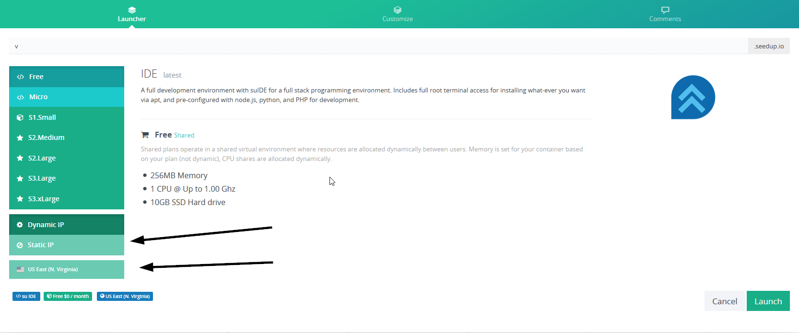
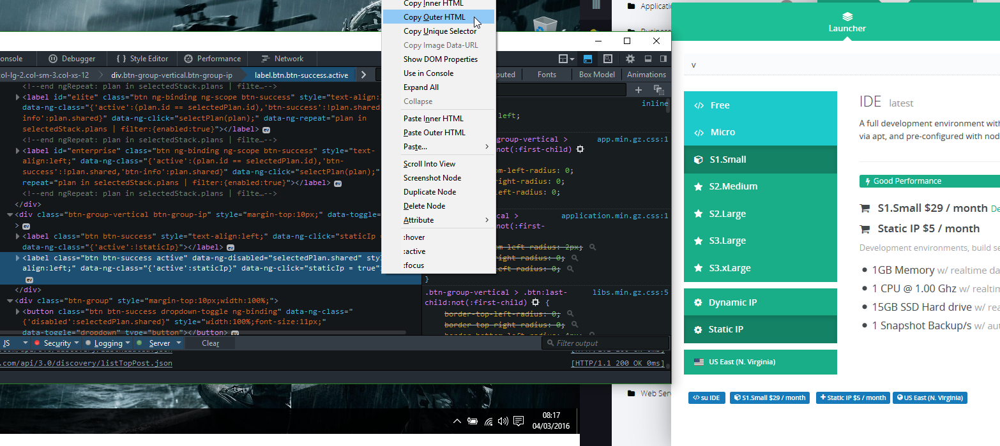
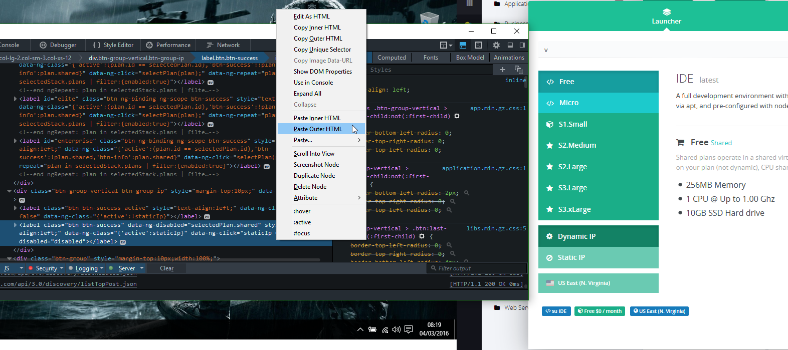
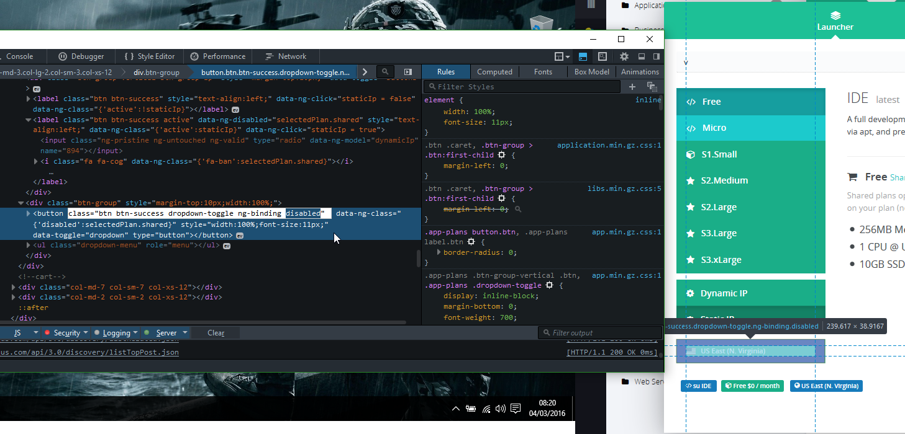
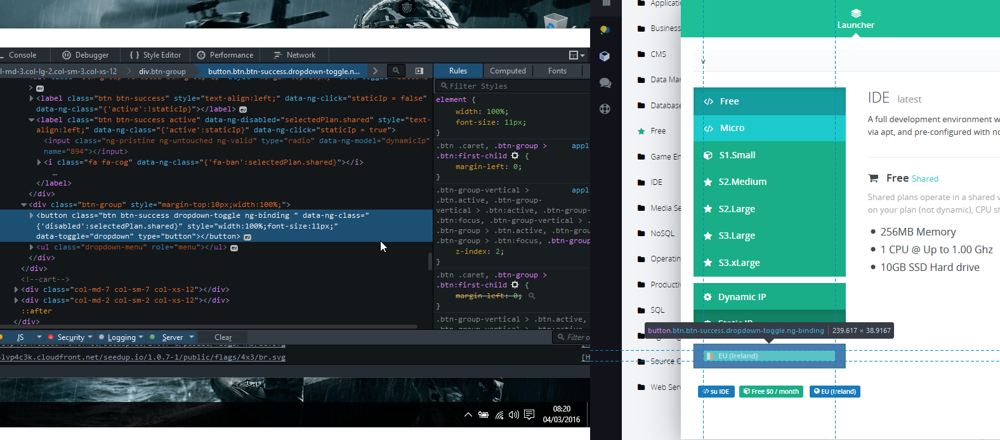
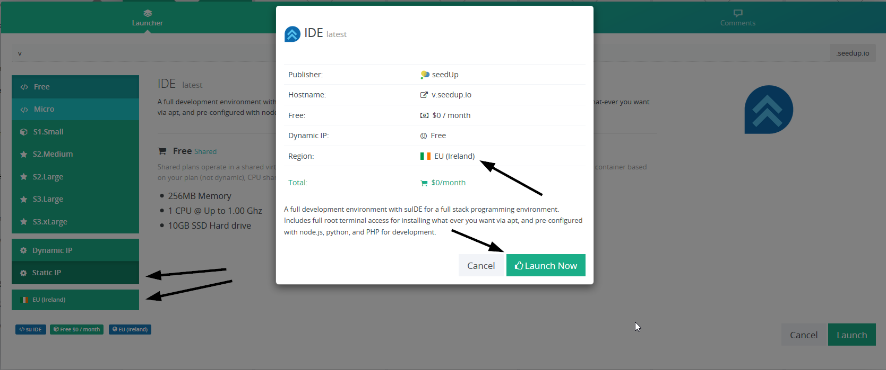
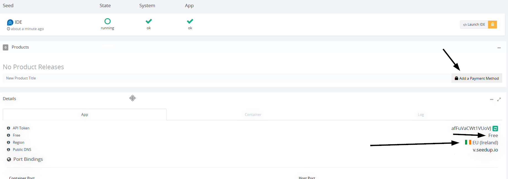

Home
HomeJump to:
0x00 Introduction0x01 Discovery
0x02 Rundown
0x03 Exploitation
0x04 Summary
0x05 References
Date: dd/mm/2022
0x00 Introduction
Around the 4th of March 2016 I was going through a phase of using free VPS providers for fun and to see what can be done before they terminate the account. I came across one called seedup.io and decided to see what I could do in regards with getting access to features only accessible to paid tiers. Unfortunately, due to how old this was the only images I have showing this when I reported it was made by young me, and therefore not the best when explaining.
Unfortunately however, whilst writing this, I found out they disappeared. Looking at archive.org the latest I can see the website being up was the 9th of August 2018. With just a quick search around, I can't find anything mentioning this so I can only assume thanks to their free tier being easy to claim, their business model collapsed.
When creating your box, they gave you the option to use a custom subdomain for the hostname. Unfortunately at the time I didn't look into stuff too much, I feel like there were a lot more missed opportunities to find more bugs.
0x01 Discovery
Whilst I was taking a look at the different tiers and their options, I decided to see if the options were still available for the free tier. After opening inspect element, I noticed that some of the html wasn't too dissimilar and that the enabled and disabled attribute were being used. I've had times where removing the disabled attribute on pages resulted to me having access, that wasn't reverted on the backend so I thought I had the chance to mess about here.
0x02 Rundown
It seems that due to the way they created the website, the way they added the tiers was mostly through creating one, duplicating that and then editing to what was required for that tier. It's also possible that they had it set so the tiers were pulled from a table without verifying the final POST request.
With the tiers, besides the specs being the difference, the free tier was unable to change from a dynamic IP to a static one, and the server location was unchangeable also. However, I was able to get access to a static IP and change my server location just by messing with the HTML. Of course the chances that I could have just edited the POST request to set these values, however I'm not sure if that was possible, and either way, this could be seen as a method to do so without requiring a proxy like Burp Suite.
0x03 Exploitation
When taking a look at the free tier section, you can see that `Static IP` and `US East (N. Virginia)` were greyed out.
After this, to save time with changing values to true and removing disabled attributes, I decided to copy the outer HTML of a paid tier for the static IP option, and pasted it over the free tier one, giving me the option to then select the Static IP option. I done the same for the server region. As you can see from the images below, not only did the server region box change to `EU (Ireland)`, but so did the tab box beneath it.
   Now as you can see, after clicking Launch in the bottom right, it pops up with the confirmation screen which confirms the region was changed. Even though it says `Dynamic IP: Free`, this isn't the case. The server was still allocated a static IP which could be confirmed in the server dashboard, however I don't have a screenshot of that as I only have what I took for the SeedUp team.
In this next image, you can see the server region is still set as `EU (Ireland)`, as well as the fact that the tier is still displayed as free and I'm told to add a payment method.
0x04 Summary
The thing to take away from this, is that even though it seems absurd that you can get access to things just by edited the html properties, it can sometimes be worth the check. This is comparable to the bug where you can edit the price of something in a web store with the requests, making it a lower price during checkout. This is due to there being no backend checks/values, and improperly relying on HTML properties to be untampered.
Even though this was back in 2016, it's not entirely stupid to assume in modern websites, that a bug like this doesn't exist. Perhaps in large providers, these checks are in place, but smaller ones may still have this oversight. Nonetheless, it was pretty interesting to come across this issue in the real world.
It's important to remember that not all web application is through the web server, frameworks, libraries, APIs, etc. That just simply editing the HTML can result in behaviours that aren't necessarily expected. A lot of the times you don't have to actually make a HTTP request, changing values might also impact the page if it is dynamic, resulting in real-time changes.
Another thing to add is despite this being short, boring and has a lack of content, the purpose is also for displaying the different kind of bugs I've came across that others might overlook.
0x05 References
[1] - Archive.org ~ Last capture of SeedUp.io